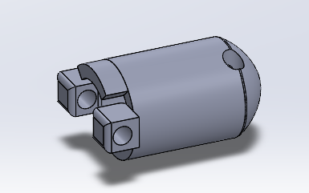

EMG-Controlled Prosthetic Hand
(In Progress)
Designing a tendon-driven prosthetic hand that will ultimately use forearm EMG signals to control grasping motions in real time.

(In Progress)
Designing a tendon-driven prosthetic hand that will ultimately use forearm EMG signals to control grasping motions in real time.
This project focuses on designing and prototyping a low-cost, tendon-driven prosthetic hand using 3D printed parts, embedded electronics, and signal processing. The long-term goal is to convert forearm EMG signals into coordinated finger motion for intuitive prosthetic control.
The current prototype validates the mechanical actuation system before integrating EMG signal processing. Four independently actuated fingers are driven by SG90 servo motors through tendon routing while an Arduino Uno provides synchronized control. Future iterations will replace pre-programmed servo commands with real-time forearm EMG input.
The prosthetic hand was designed entirely in SolidWorks with a focus on modularity, low-cost manufacturing, and tendon-driven actuation. Multiple design iterations improved joint motion, tendon routing, and overall assembly before integration into the complete four-finger prototype.
Fishing line tendons driven by independent SG90 servo motors generate finger flexion while simplifying the actuation system.
Rubber bands provide passive finger extension, allowing the fingers to reopen without additional actuators.
M3 screw pins create durable rotational joints that are simple to assemble, service, and redesign.
Individual fingers can be redesigned independently and SG90 servos are currently attached to a temporary mounting system.

SolidWorks model of the four-finger prototype showing tendon routing holes, finger joints, and the modular architecture.
Bench-top testing of the tendon-driven mechanism using Arduino-controlled SG90 servo motors to validate independent finger actuation.
An Arduino Uno independently controls four SG90 servos through PWM outputs, while an external regulated 5V power supply powers the actuators using a shared common ground.
Arduino Uno generates independent PWM signals for each finger servo.
Four SG90 micro servos drive tendon motion for independent finger flexion.
External regulated 5V supply powers the servos while sharing a common ground.
MyoWare sensor, MATLAB filtering, feature extraction, and gesture recognition.

Servo wiring diagram showing the shared power rail and Arduino PWM outputs.

Physical electronics prototype with Arduino, breadboard, and external power distribution.
The prosthetic hand evolved through rapid CAD iteration, mechanical testing, embedded programming, and hardware integration. The milestones below highlight the major engineering decisions that transformed the project from an initial concept into a functioning four-finger prototype.



Investigated tendon-driven prosthetic hand designs and human hand biomechanics before designing the first articulated finger in SolidWorks. Multiple CAD revisions and 3D printed prototypes refined joint geometry, tendon routing, and overall finger motion.


Successfully demonstrated tendon-driven finger motion using fishing line and elastic return bands. The design was then upgraded with an SG90 servo, redesigned mounting hardware, and permanent servo integration.


Developed Arduino firmware for programmable finger flexion, designed the four-servo control circuit in TinkerCAD, and validated simultaneous control using an external regulated power supply.


Expanded the design into a synchronized four-finger prosthetic hand, integrating mechanical, electrical, and software subsystems into a complete prototype that now serves as the foundation for future EMG control and palm development.
While the current prototype demonstrates a functional tendon-driven four-finger mechanism, future work will focus on completing the full prosthetic hand and transitioning toward intuitive EMG-based control.
This project establishes a modular mechanical and electrical foundation for future EMG-controlled prosthetic hand research, with upcoming work focused on palm development, embedded electronics, and real-time biosignal processing.